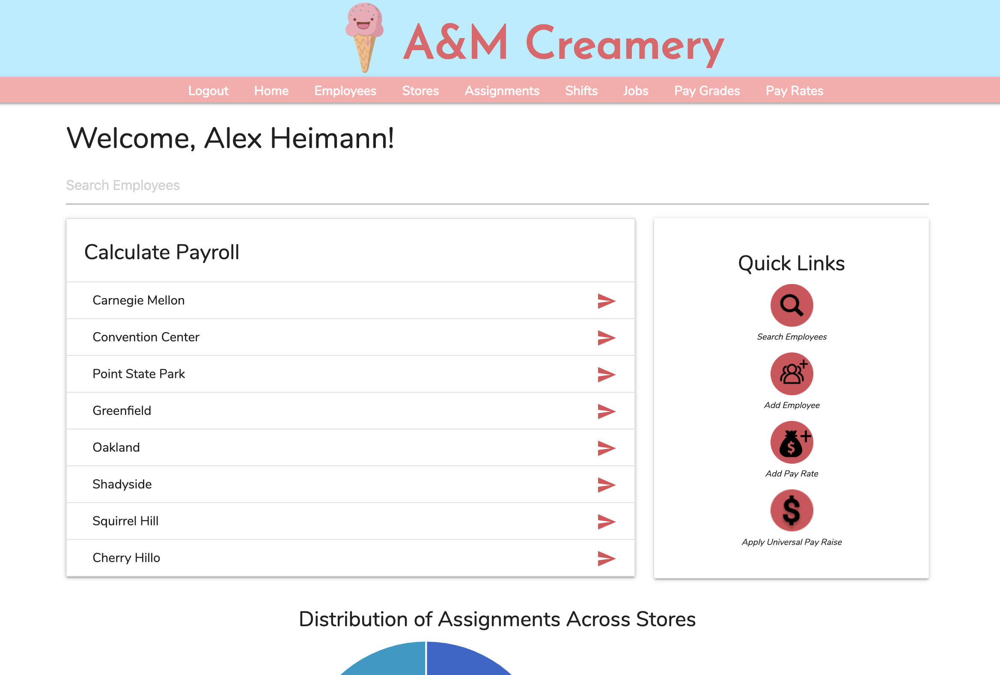
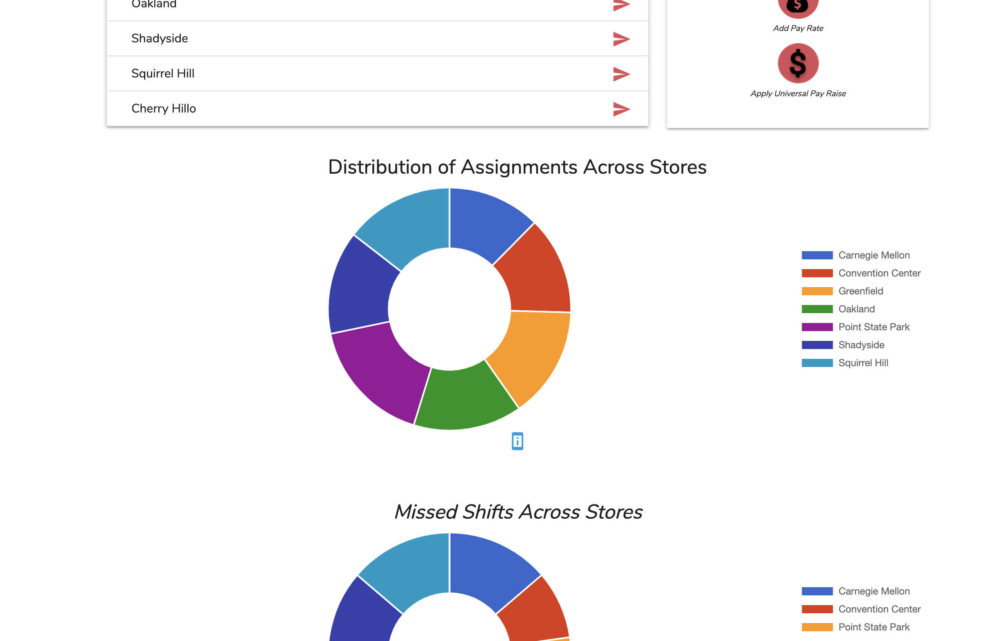
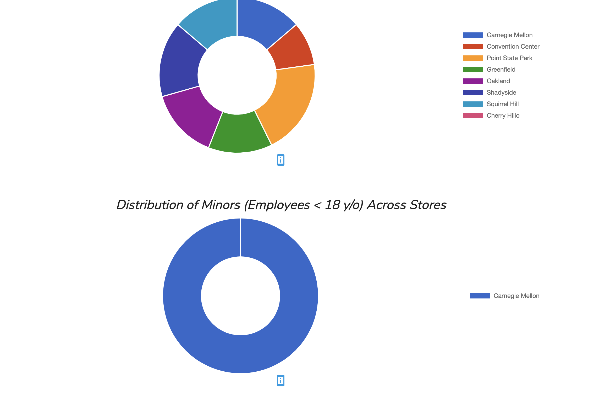
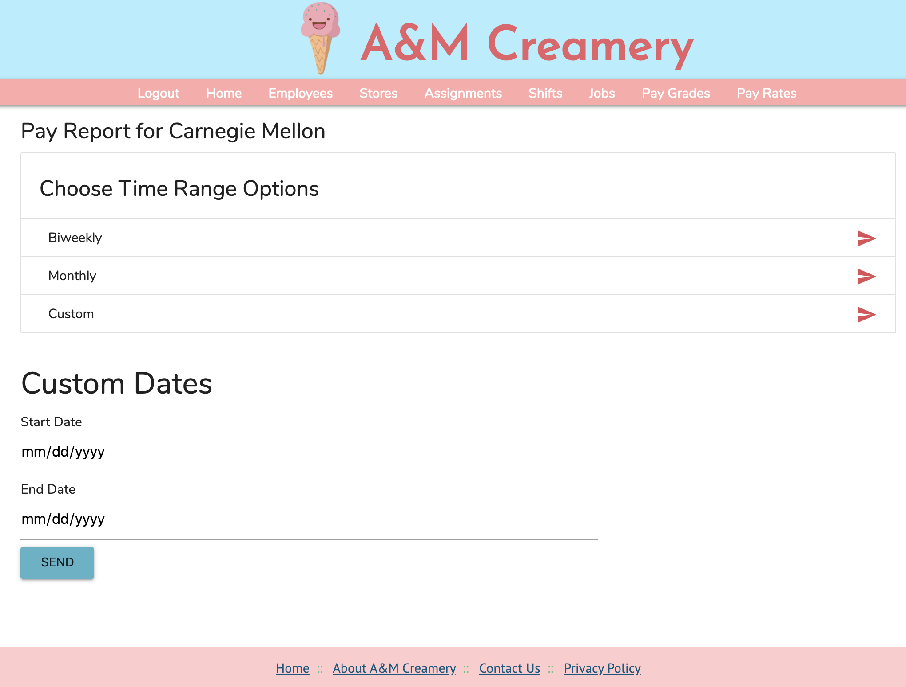
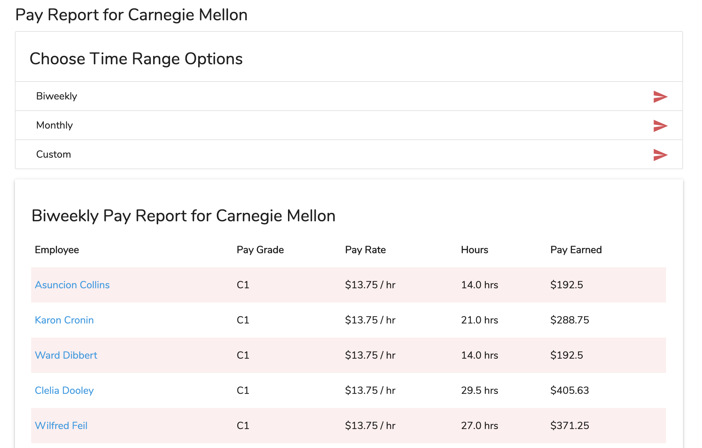
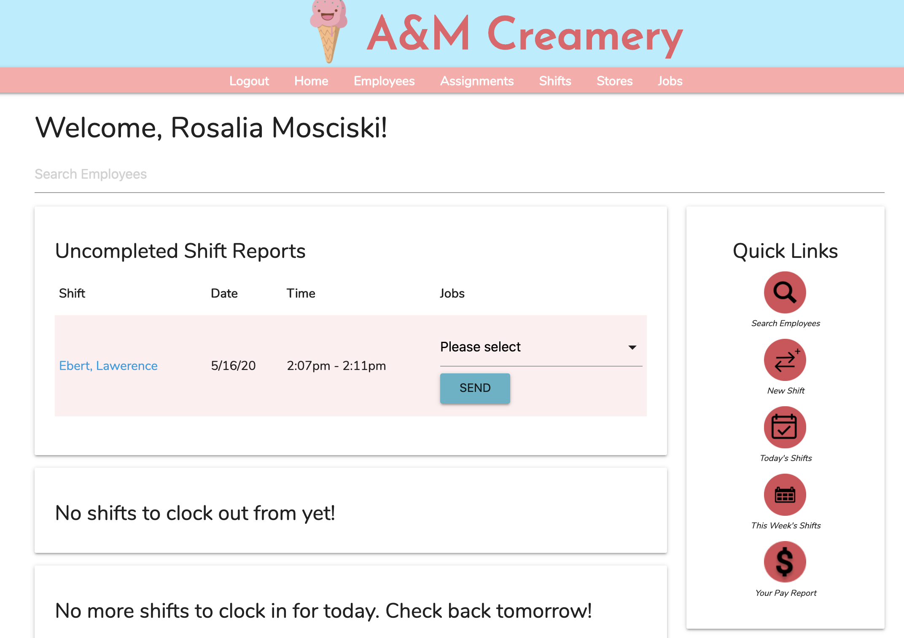
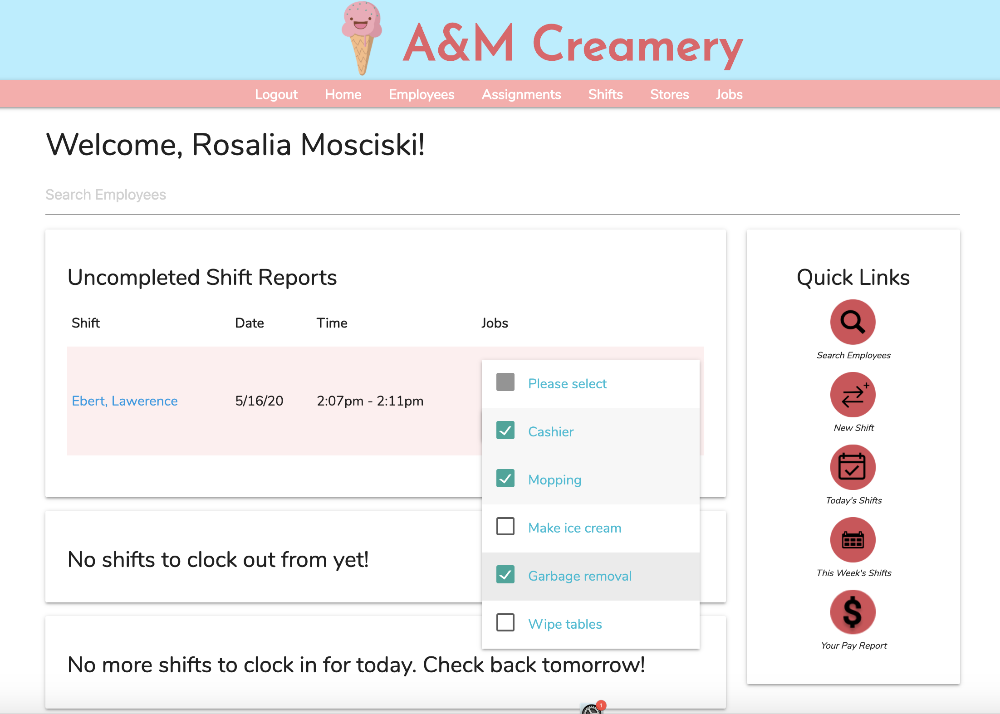
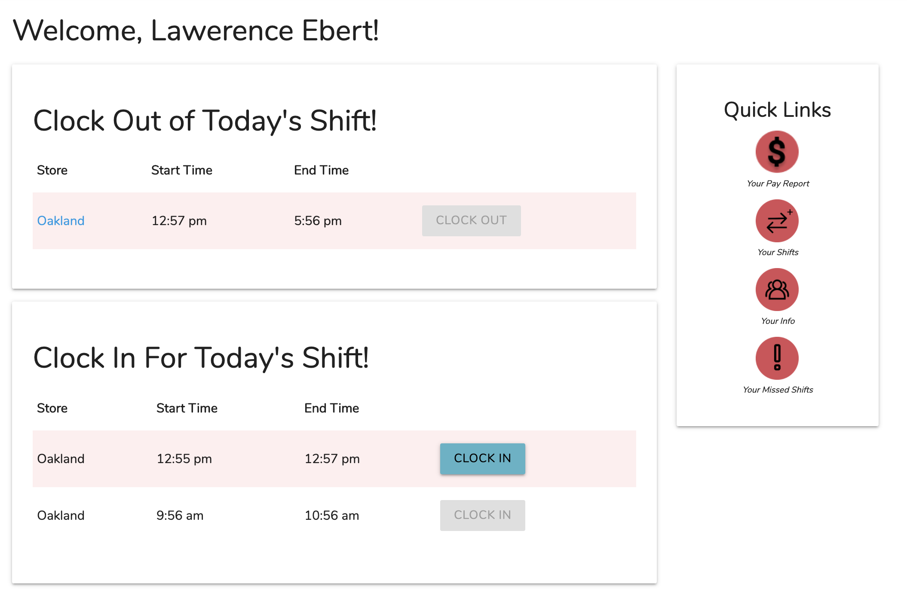

A&M Creamery Website
This Rails Web application was developed from scratch from January 2020 to May 2020 as a part of the class Application Design and Development (67272). The application allows admins, managers, and employees to log into a system that, among other things:
- Allows managers and admins to create shifts for employees
- Allows employees to clock into and out of shifts
- Allows managers to record the jobs done on each of their employee's shifts
- Allows admins to add assignments of employees to certain stores and terminate and delete assignments
- Keeps track of current and past assignment information, employee information, store information, and shift information
- Eliminates the gulfs of execution and evaluation by selectively showing actions, pages, and links to only those who can access this information
Highlighted Features
This application has many use cases and functionalities, and I'm only going to highlight some key features below. Reach out to me if you'd like to chat further about my process designing and developing this website!
Admin Dashboard



I made sure to include the most important tasks for an admin with easy access on the admin's dashboard. This includes quick links, a payroll calculator, and graphs that show important statistics to govern business needs across the stores.
Calculating Payroll


The admin can calculate the payroll for a particular store using this tool. There are default options such as Biweekly and Monthly calculation to provide speedy options and reduce the tediousness of manually selecting dates using the datepicker. However, this option is still available with the "Custom" selection.
Logging Jobs Done On Shifts


The most notable component of the manager dashboard is the report that they complete for each finished shift at their store. Creating a seperate shift-job item for each job completed on a shift would be incredibly tedious; for this reason, I designed the report completion task so that all the user has to do is check the relevan boxes and hit submit, letting the system handle the work of creating shift-job items and thereby reducing cognitive load on the user.
Employee Dashboard

Besides the quick links, the most immediate action an employee would have to take is to clock in and out of shifts. I included disabled and enabled buttons dependent on whether the system allows the user to clock in given the current time.